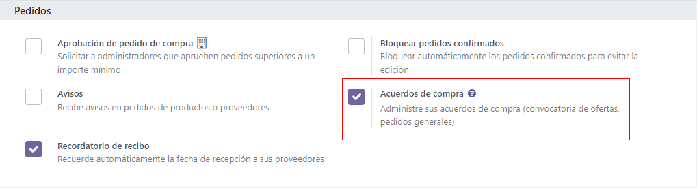
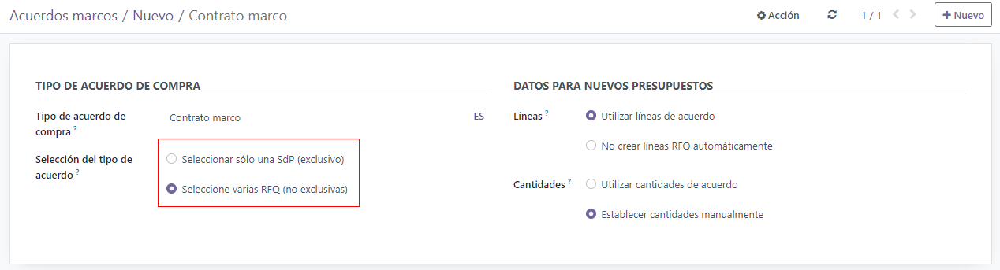
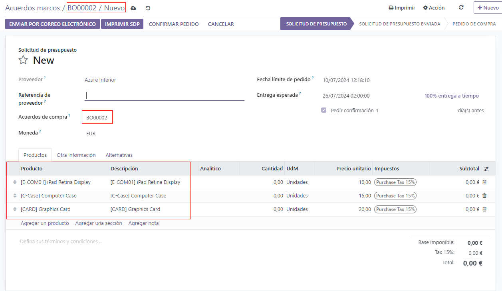
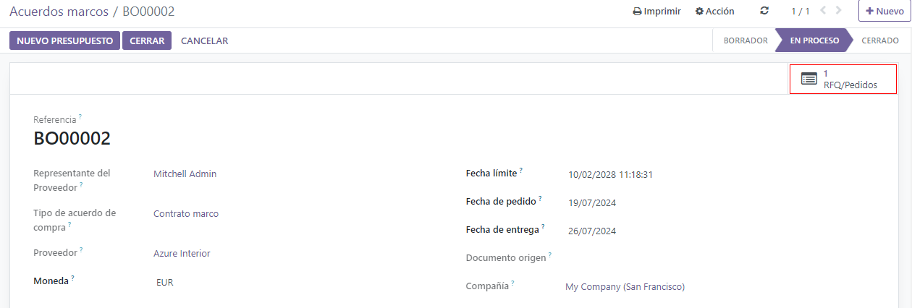
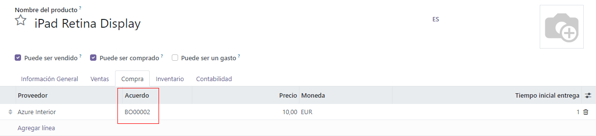

Utilice las órdenes abiertas para crear contratos de compra con los proveedores¶
Las órdenes abiertas son contratos de compra a largo plazo entre una empresa y un proveedor para enviar productos de manera recurrente con precios ya establecidos. Las órdenes abiertas son útiles cuando se compran productos del mismo proveedor, pero en diferentes cantidades en periodos de tiempo diferentes.
Al simplificar los procesos de solicitar órdenes, las órdenes abiertas no solo ahorran tiempo, sino también dinero, ya que pueden ser ventajosas al negociar precios al por mayor con los proveedores.
Crear una nueva orden abierta¶
Para crear órdenes abiertas, la función de Contratos de compra primero debe estar activada en los ajustes de la aplicación Compras. Para hacerlo, vaya a , y debajo de la sección Órdenes, haga clic en la casilla junto a Contratos de compra. De esta manera, podrá crear órdenes abiertas, asi como solicitudes alternas de cotizaciones.
Para crear una orden abierta, vaya a , y haga clic en Nuevo. Esto crea (y lo redirige a) un nuevo formulario para una orden abierta.
Desde este nuevo formulario para una orden abierta, puede configurar diferentes campos y ajustes, para que existan reglas predeterminadas que debe seguir el contrato recurrente a largo plazo:
Representante de compras: el usuario asignado a esta orden abierta en específico. De forma predeterminada es el usuario que creó el contrato, pero puede cambiarlo desde el menú desplegable ubicado junto a este campo.
Tipo de contrato: es el tipo de contrato de compra en el que se clasifica esta orden abierta. En Odoo, las órdenes abiertas son los únicos contratos de compra oficiales.
Proveedor: es el proveedor con quién se celebra el contrato, ya sea una vez o de manera recurrente. Puede seleccionar el proveedor directamente desde el menú desplegable que está junto a este campo.
Divisa: es la divisa acordada que se utilizará para este acuerdo. Si tiene activadas varias divisas en su base de datos, puede cambiarlas desde el menú desplegable que está junto a este campo.
Fecha límite del contrato: es la fecha en el que este contrato de compra vence (si así se desea). Si no quiere que esta orden abierta tenga fecha de vencimineto, deje este campo en blanco.
Fecha de la orden: es la fecha en la que esta orden abierta debe solicitarse si se creó una nueva cotización directamente desde el formulario de la orden abierta. Si se crea una nueva cotización, este valor aparecerá atuomáticamente en el campo Fecha límite de la orden en la solicitud de cotización.
Fecha de entrega: es la fecha de entrega esperada de los productos incluidos en una solicitud de cotización que se creó directamente desde el formulario de la orden abierta. Si se crea una nueva cotización, este valor llenará automáticamente el campo Entrega esperada en la solicitud de cotización.
Documento fuente: es la Orden de compra fuente a la que estará vinculada esta orden abierta. Si la orden abierta no debe estar vinculada a ninguna orden de compra, deje este campo en blanco.
Empresa: es la empresa que está asignada a esta orden abierta específica. De manera predeterminada, será la empresa a la que pertenezca el usuario que creó la orden abierta. Si la base de datos no es del tipo multiempresa, este campo no se puede modificar y aparecerá la única empresa registrada en la base de datos.
Una vez que todos los campos estén completos, haga clic en Agregar una línea para agregar productos debajo de la columna Producto. Luego, cambie la cantidad de cada producto en la columna de Cantidad (si lo desea), y establezca un precio en la columna Precio unitario.
Importante
Al agregar productos a una nueva orden abierta, los precios que ya existian de los productos no se agregaran automáticamente a las líneas de producto. Los precios se deben asignar manualmente al cambiar el valor en la columna Precio unitario con un precio acordado con el proveedor seleccionado. De lo contrario, el precio se quedara en 0.
Para ver y cambiar los ajustes predeterminados del contrato de compra para las órdenes abiertas directamente desde el formulario de la orden abierta, haga clic en el enlace interno (ícono de flecha) que está junto al campo Tipo de contrato dónde aparece Orden abierta. Esto lo llevará a los ajustes de la orden abierta.
Desde aquí, puede editar los ajustes de las órdenes abiertas. Debajo de la sección Tipo de contrato, puede cambiar el nombre del Tipo de contrato (si lo desea), y también puede cambiar el Tipo de selección del contrato. Hay dos opciones que puede activar para el tipo de selección:
Seleccionar solo una solicitud de cotización (exclusivo): cuando se confirma una orden de compra, el resto de las órdenes de compra se cancelan.
Seleccionar varias solicitudes de cotización (no es exclusivo): cuando se confirma una orden de compra, el resto de las órdenes de compra no se cancelarán. En lugar de eso, se permitirán varias órdenes de compra.
En la sección Datos para cotizaciones nuevas , los ajustes para cómo se completan las líneas de producto y las cantidades en las cotizaciones nuevas usando los contratos de compra se pueden cambiar junto a los campos Líneas y Cantidades.
Hay dos opciones que se pueden acitvar para el campo Líneas:
Usar las líneas del contrato: al crear una nueva cotización, las líneas de producto se pre-completarán con los mismos productos listados en la orden abierta, si selecciona esa orden para la nueva cotización.
No crear líneas de solicitud de cotización automáticamente: los ajustes se transferirán a la nueva cotización al crearla y seleccionar una orden abierta existente, pero las líneas de producto no se completarán.
Y hay dos opciones que puede activar para el campo Cantidades:
Usar cantidades del contrato: al momento de crear una nueva cotización, las cantidades del producto que aparecen en la orden abierta completarán las líneas de producto en caso de que seleccione esa orden para la nueva cotización.
Establecer cantidades manualmente: al crear una nueva cotización y seleccionar una orden abierta ya existente, las líneas de producto se pre-completarán, pero las cantidades se quedarán en 0. El usuario tendrá que establecer manualmente las cantidades.
Una vez que haya hecho los cambios deseados (si hizo alguno), haga clic en Nuevo (a través de las migas de pan, en la parte superior de la página) para regresar al formulario de la orden abierta y haga clic en Confirmar para guardar el nuevo contrato de compra. Una vez confirmado, la orden abierta cambiará de Borrador a En proceso, lo que significa que este contraro se puede seleccionar y usar al crear una nueva solicitud de cotización.
Truco
Después de crear y confirmar una orden abierta, los productos, cantidades y precios todavía se pueden editar, agregar o quitar del contrato de compra.
Crear una nueva solicitud de cotización a partir de una orden abierta.¶
Después de confirmar una orden abierta, puede crear nuevas cotizaciones directamente desde el formulario de la orden abierta que usará las reglas establecidas en el formulario para pre-llenar la nueva cotización con la información correcta. Además, esta nueva cotización se vinculará automáticamente a esta orden abierta a través del botón inteligente Solicitudes de cotización/Órdenes que está del lado superior derecho del formulario.
Para crear una nueva cotización desde el formulario de una orden abierta, haga clic en Nueva cotización. Esto creará (y lo llevará) a una nueva solicitud de cotización, que estará pre-llenada con la información correcta dependiendo de los ajustes configurados en el formulario de la orden abierta.
Desde el nuevo formulario de la solicitud de cotización, haga clic en Enviar por correo electrónico para escribir y enviar un correo al proveedor seleccionado; haga clic en Imprimir solicitud de cotización para generar un PDF de la cotización para imprimir; o una vez lista, haga clic en Confirmar orden para confirmar la orden de compra.
Una vez que se confirmó la orden de compra, regrese al formulario de la orden abierta (a través de las migajas de pan, en la parte superior de la página). Desde el formulario de la orden abierta, hay ahora una solicitud de cotización que aparece en el botón inteligente Solicitudes de cotización/Órdenes que está en la esquina superior derecha del formulario. Haga clic en el botón inteligente Solicitudes de cotización/Órdenes para ver la orden de compra que acaba de crear.
Crear una orden abierta desde una solicitud de cotización¶
Para crear una nueva solicitud de cotización, vaya a la aplicación , y haga clic en Nuevo.
Luego, agregue información al formulario de solicitud de cotización: agregue un proveedor desde el menú desplegable que está junto al campo Proveedor y haga clic en Agregar un producto para seleccionar un producto desde el menú desplegable en la columna Producto. Luego, establezca la cantidad a comprar deseada en la columna Cantidad y cambie el precio de compra en la columna Precio unitario, si lo desea.
Hacer clic en el icono de más opciones (dos puntos) le proporcionará opciones adicionales de visibilidad que puede agregar a la línea del artículo. Repita estos pasos para agregar tantas opciones adicionales como lo desee, incluyendo las UdM (Unidades de medida) y la fecha de Entrega esperada.
Antes de confirmar la nueva cotización y crear la orden de compra, haga clic en el menú desplegable que está junto al campo Orden abierta e introduzca un nuevo nombre para la orden abierta. Esto crea un nuevo contrato de compra y guarda la información ingresada en el formulario de la orden de compra, así como la infromación de las líneas de producto.
Desde el nuevo formulario de la solicitud de cotización, haga clic en Enviar por correo electrónico para escribir y enviar un correo al proveedor seleccionado; haga clic en Imprimir solicitud de cotización para generar un PDF de la cotización para imprimir; o una vez lista, haga clic en Confirmar orden para confirmar la orden de compra.

Nota
Para ver el contrato de compra con orden abierta recién creado, vaya a , y haga clic en la nueva orden abierta. Desde aquí, puede cambiar los ajustes y las reglas si así lo desea.
Órdenes abiertas y reabastecimiento¶
Una vez confirmada una orden abierta, se añade una nueva línea de proveedor en la pestaña Compra de los productos incluidos en la orden abierta. Esto hace que las órdenes abiertas funcionen muy bien junto con el reabastecimiento automático, porque la infromación del Proveedor, el Precio, y el Contrato están referenciadas en la línea del proveedor. Esta información se utiliza para determinar dónde, cuándo y a qué precio se puede reabastecer este producto.
